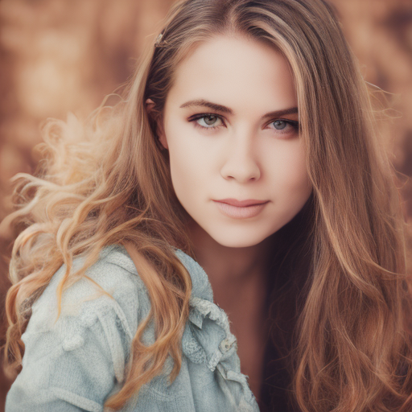

Stable Diffusion Turbo inference in pure MFL — no Python, no PyTorch, one static binary

Both produce photo-like output with ~75% skin-tone coverage and smooth gradients. Pixel diff: mean=0.02, max=1 out of 255.
| Component | Status |
|---|---|
| Safetensors reader (mmap + Windows fallback) | ✅ |
| CLIP text encoder (23-layer, quick_gelu, causal mask) | ✅ |
| UNet (conv + attention, 1-step) | ✅ |
| EulerDiscreteScheduler (trailing spacing) | ✅ |
| VAE decoder (latent → image) | ✅ |
| OpenCL GPU backend (conv2d, matmul, group_norm) | ✅ |
| Per-stage validation vs diffusers/PyTorch | ✅ |
prompt → tokenize.py → token_ids.txt
↓
machin-diffusion.exe → CLIP text encoder (GPU)
↓
text embeddings [77 × 1024]
↓
UNet forward pass (1 step, GPU) → noise prediction
↓
EulerDiscreteScheduler → denoised latent
↓
VAE decoder → 512×512 PPM imageSafetensors files are used as-is — zero conversion. On POSIX they're mmap'd (zero-copy);
on Windows they're read into memory. Three hot primitives (conv2d_f32,
matmul_f32, group_norm_f32) dispatch to OpenCL automatically.
machin-diffusion is written in machin (MFL), a machine-first language that compiles to C. No Python runtime, no PyTorch, no libtorch — one static binary. Part of awesome-machin.
View on GitHub →